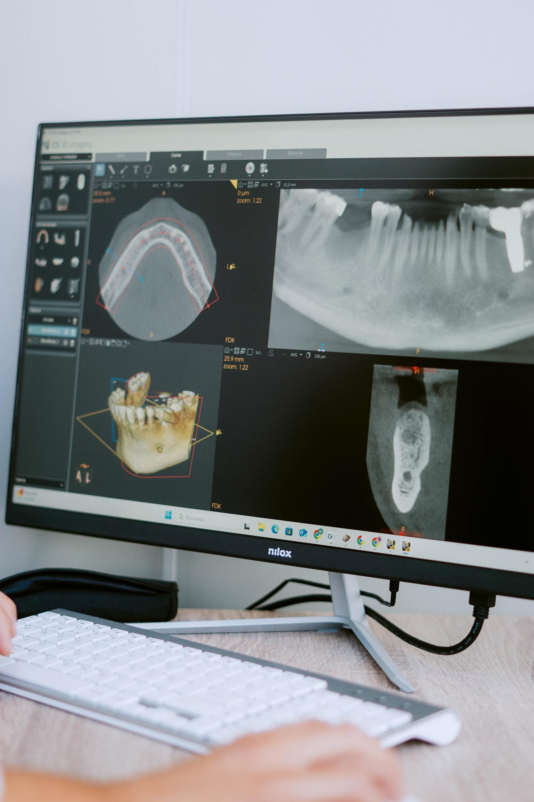

Implantes dentales

¿Qué son los implantes dentales?
Los implantes dentales no son sino la sustitución de la raíz de un diente perdido (o de varios de ellos si se diera el caso). Para ello se coloca una estructura de titanio similar a la de un tornillo en el hueso de los maxilares la cual sustituye la raíz del diente. Sobre él se asienta una nueva pieza dental, de tal forma que no se note intervención alguna.
¿El resultado? Una sonrisa perfecta.
Con ese objetivo en mente es muy importante la calidad de los materiales empleados. ¿Cuál es entonces el mejor material para implantes dentales?
En Airam hacemos uso de implantes dentales de titanio tratados especialmente para que la fusión entre implante y hueso sea lo más satisfactoria posible.
Es muy importante que tengas en consideración este aspecto, pues es el que permitirá que a la larga no se presente ningún riesgo de rechazo.
¿Cuáles son las ventajas de los implantes dentales?
No nos andemos por las ramas; vayamos directos al grano:
- Son duraderos y permanentes. ¿Estás buscando una solución fija? Entonces ésta ha de ser tu opción.
- No interfieren para nada en tu rutina diaria. Masticar, hablar, sonreír… No notarás diferencia alguna.
- Es una opción segura. Existe una tasa de éxito del 98% en implantes de alta gama. ¿Y adivina qué? Los nuestros lo son.
- El resto de tus dientes no sufrirán daño alguno. Exacto, el resto de tus piezas dentales permanecerán intactas a diferencia de lo que ocurre con otras intervenciones.
- Permiten mantener una buena higiene bucal. Tu rutina diaria de cepillado no cambiará para nada.
- Tu opción más rentable a largo plazo. Recuerda: es una opción permanente y duradera.
¿Qué tipos de implantes dentales existen?
Muchos y variados. Todo depende de cada situación bucal personal, así como de los materiales usados (perdona que nos repitamos, pero queremos dejar clara la importancia de la calidad de los mismos). En Airam te ofrecemos las siguientes opciones:
Implante unitario
La elección ideal de cara a restituir una sola pieza dental de tal forma que su funcionalidad y estética permanezcan como siempre.
Puente sobre implantes
Si es necesario reponer varias piezas dentales al mismo tiempo, no es necesario colocar un implante por cada pieza ausente. Si hay que reponer, por ejemplo, tres piezas se colocarían dos implantes sobre los que se apoyarían tres coronas.
Prótesis híbridas
Es la solución para cuando no tenemos ninguna pieza dental. Podemos rehabilitar toda la arcada dental mediante una prótesis fija atornillada que le devuelva al paciente la seguridad, confort y estética. El número de implantes a colocar depende mucho del caso y del hueso remanente (incluso pueden llevarse a cabo estos implantes dentales sin necesidad de hueso). Son estructuras fijas que asegurarán tu confort y estética. Como te habíamos comentado: el objetivo es conseguir una sonrisa perfecta.
Sobredentaduras
Esta solución se utiliza también cuando no tenemos ninguna pieza dental. Es la alternativa a una prótesis híbrida cuando no se puede realizar por motivos de anatomía, económicos o de higiene. Son necesarios tan solo 2 o 4 implantes por arcada con lo cual la usamos cuando no tenemos suficiente hueso o cuando buscamos alternativas más económicas.
Como verás, su aspecto es similar al de prótesis convencionales (puedes consultar más sobre prótesis dentales fijas sin implantes y otro tipo de prótesis en el enlace que te acabamos de dejar). Con todo, cuentan con una sujeción de más del 300% con respecto a éstas. Son muy cómodas, más económicas y muy higiénicas.
¿Cómo se ponen los implantes dentales?
Lo primero de todo: se ha de hacer un meticuloso estudio personalizado. Como comentábamos antes cada caso es único, y el tuyo no será ninguna excepción.
¿Que cuántos implantes dentales necesitas? De nuevo depende de cada situación bucal. Precisamente el estudio mediante radiografías panorámicas, TAC, escáneres digitales, etc. nos permitirá averiguarlo. Así nos aseguraremos de conseguir la sonrisa perfecta que buscas.
Pero seguro te estás preguntando: ¿cómo se hacen los implantes dentales? Una vez conocemos a fondo tu anatomía bucal te ofreceremos una técnica mínimamente invasiva. Una técnica que es posible en el 90% de los casos.
¿Duele poner implantes dentales? Para nada, no tienes de qué preocuparte. ¿La razón? Emplearemos una anestesia local (la misma que se suele usar en el caso de un empaste, por ejemplo) para que no sientas en absoluto ninguna molestia.
No sólo eso; sino que además el tiempo de recuperación tras poner los implantes dentales es muy reducido. La técnica que empleamos te permitirá seguir con tu día a día a las pocas horas del tratamiento. Podrás masticar, cepillarte los dientes y demás sin problema alguno.
Incluso en algunos casos puedes salir directamente de nuestra clínica Airam en con la prótesis ya terminada.
¿A partir de qué edad se pueden poner implantes dentales?
Ésta también es una pregunta que nos realizan de forma frecuente (al igual de a qué edad es normal poner implantes dentales), y la respuesta es clara: cuando el proceso de desarrollo facial haya terminado. El fin de este proceso suele darse a los 18 años en el caso de los hombres y, respecto a las mujeres, éste puede acabar a los 16.
Por eso mismo, para saber si es ya posible iniciar tu tratamiento, es necesario que estudiemos pormenorizadamente tu situación bucal. Ponte en contacto con nosotros y encantados te asesoraremos de cara a este tratamiento.
Por otra parte, puede que también te estés preguntando si existe una edad límite para ponerse implantes dentales. Pues bien: no, no la hay. Todo depende en realidad de la salud oral y general del paciente.
Muchas personas de 70 u 80 años pueden ponerse implantes dentales sin ningún tipo de complicaciones. Es más, este tratamiento suele ser muy frecuente en pacientes con más de 50 años de edad.
En serio; pregúntanos. Analizaremos tu caso al detalle y te aconsejaremos sobre cuál es la opción ideal para ti.
Otras preguntas frecuentes con respecto a la implantología
¿Cuántos implantes dentales se pueden poner en un día?
En circunstancias normales no hay ningún límite respecto a cuántos implantes dentales se pueden poner en un día. Y sí, cuando comentamos que no existe ningún límite estamos diciendo que incluso se pueden poner 8, 10 o incluso 12 implantes dentales en una sola sesión. En Airam, además contamos con el servicio de sedación consciente para este tipo de casos. Aquí nos tienes para preguntarnos.
¿Con qué van pegados los implantes dentales?
Los implantes dentales que empleamos en Airam no requieren de ningún tipo de adhesivo. Los implantes son estructuras de titanio que se integran o fusionan al hueso. Las prótesis de rodilla o cadera, usan el mismo mecanismo. El resultado es una fijación extrema duradera y permanente.
¿Es necesario limpiar los implantes dentales?
Por supuesto; pero al igual que haces día a día con el resto de tus dientes. Es importante saber cómo cuidarse después de ponerse los implantes dentales. Para ello te recomendamos, además de extremar la limpieza de los mismos en el cepillado (consulta todo lo que has de saber sobre cepillado en el artículo relacionado de seda dental). Es más, existe una seda dental especial para ello que te ayudará a eliminar los restos de comida y placa que se depositen en la base de estas prótesis. Esta seda dental la podrás encontrar sin problema alguno en cualquier farmacia. Indica simplemente que la necesitas de cara a tus implantes dentales.
¿Es normal que los implantes dentales se muevan?
Es posible que notes cierto movimiento de la corona, no te asustes, eso entra dentro de lo normal. Simplemente contacta con nosotros y te lo solucionaremos, únicamente habrá que hacer un pequeño ajuste. En ocasiones no solo se mueve la corona. Si la movilidad proviene del implante supone la pérdida de osteointegración del implante y por lo tanto el rechazo. En cualquier caso, siempre es importante que se valore por un profesional.
¿Cómo afecta el tabaco a los implantes dentales?
Seamos sinceros: si necesitas unos implantes dentales lo más recomendable es que dejes de fumar (bueno, y sin necesidad de implantes dentales: dejar de fumar siempre es una buena decisión). Los pacientes fumadores tienen entre 2’5 y 6 veces más riesgo de presentar problemas con los implantes dentales que los no fumadores.
¿Qué tipo de problemas? Escasa regeneración ósea o falta de integración del implante; mayor riesgo de infección tras cualquier cirugía, lo que supone el fracaso del tratamiento; o, incluso, una cicatrización más lenta.
Por todo ello, te recomendamos encarecidamente que dejes de fumar definitivamente. Ya no sólo de cara a los implantes dentales. Tu salud bucal, tu salud general, te lo agradecerán.
¿Con implantes dentales se pueden hacer radiofrecuencias?
Sí, se pueden llevar a cabo radiofrecuencias faciales sin ningún problema. Ahora bien, como todo este tipo de tratamientos, este procedimiento ha de ser llevado a cabo por personal cualificado.
¿Con osteoporosis se pueden poner implantes dentales?
La osteoporosis es una pérdida progresiva de la densidad de los huesos que afecta a muchas personas. Con todo, a pesar de que la osteoporosis implica una mayor fragilidad ósea, ello no significa que no puedas ponerte implantes dentales. Es más, en la mayoría de casos no habrá problema alguno.
Sí es cierto que necesitaremos realizarte un estudio previo para analizar tu situación particular y así poder detectar en qué zonas se pueden realizar los implantes dentales necesarios. En Airam tienes las puertas abiertas de par en par para que te atendamos.
Esperamos que esta sección te haya sido de gran ayuda para resolver todas tus dudas acerca de la implantología. Un tratamiento seguro y duradero que te ayudará a presumir de sonrisa. Ahora bien, si tienes alguna otra pregunta en el tintero aquí nos tienes para hacérnosla llegar: entra en nuestra sección de Contacto y llámanos o escríbenos.
Encantados estaremos de dar respuesta a todas tus dudas y de guiarte en este y otros procesos. Tu salud dental es lo mínimo que merece.